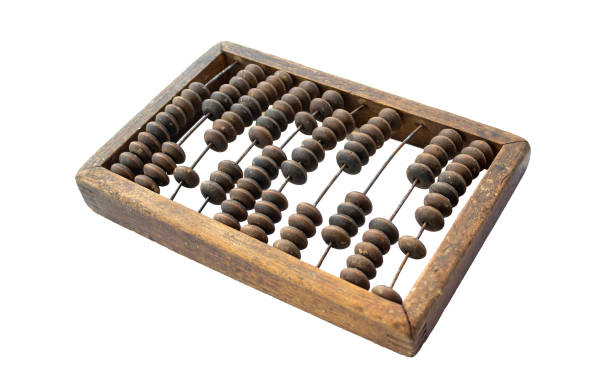
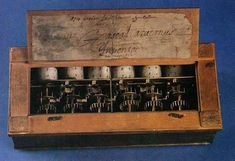
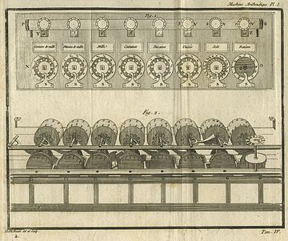
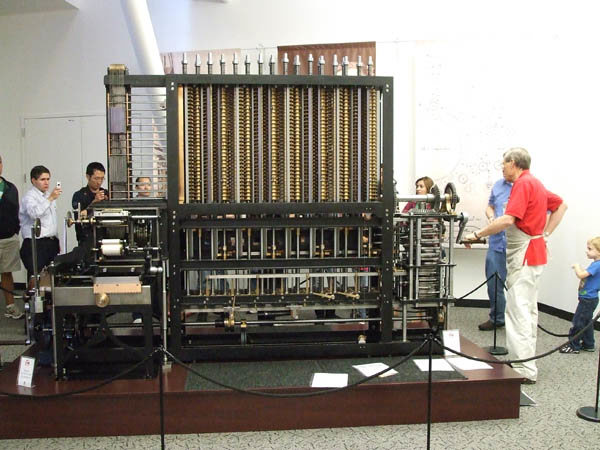

📜 Introduccion
La informática, como la conocemos hoy, ha evolucionado a lo largo de siglos. Su desarrollo ha estado marcado por avances en matemáticas, ingeniería y tecnología, permitiendo la creación de máquinas capaces de procesar información de manera automática.
🖥️ Historia de la computación
¿Que es la computación? 🔽
Evolucion de la Computacion
Desde la antigüedad, el ser humano ha buscado formas de facilitar los cálculos.
- Ábaco (3000 a.C.): Uno de los primeros dispositivos de cálculo, utilizado en diversas civilizaciones. 
- Máquina de Pascal (1642): Inventada por Blaise Pascal, permitía realizar sumas y restas mecánicamente.  
- Máquina Analítica de Babbage (1837): Diseñada por Charles Babbage, sentó las bases de los computadores modernos. 
¿Que es una Computadora? 🔽
¿Como se compone una computadora? 🔽
Primeras computadoras modernas
Las primeras computadoras electrónicas surgieron en la Segunda Guerra Mundial, utilizadas principalmente para cálculos militares.
- ENIAC (1946): La primera computadora electrónica de propósito general.
- UNIVAC I (1951): Primera computadora comercial.
El ENIAC (Computador e Integrador Numérico Electrónico) fue la primera computadora electrónica de propósito general. Fue diseñada en la Universidad de Pensilvania y se completó en 1945.
Características:
- ● Fue diseñada por John Presper Eckert y John William Mauchly
- ● Fue utilizada por el Laboratorio de Investigación Balística del ejército de los EEUU
- ● Medía 167 metros cuadrados y pesaba 27 toneladas
- ● Era capaz de realizar 5.000 sumas y 300 multiplicaciones por segundo
Comparación:
- ● UNIVAC I: Hacía 1,000 operaciones por segundo. (1951)
- ● Intel Core i3: Un Intel Core i3 moderno a 3.3 GHz puede ejecutar aproximadamente 3.300 millones de operaciones por segundo. (Super normal y de bajo rendimiento - 2025)
Tipos de computadoras:
Las computadoras se pueden clasificar en distintos tipos según su tamaño, capacidad de procesamiento y propósito
● Supercomputadoras
Son usadas para cálculos extremadamente complejos.
Se encuentran en centros de investigación, meteorología y simulaciones científicas..
● Mainframes
Grandes sistemas utilizados por bancos, gobiernos y empresas para procesar enormes volúmenes de datos.
Son altamente confiables y capaces de manejar miles de usuarios simultáneamente.
Ej: IBM Z Series.
● Servidores
Computadoras diseñadas para gestionar redes y servicios como bases de datos, sitios web o almacenamiento en la nube.
Se caracterizan por su alta disponibilidad y rendimiento continuo.
● Computadoras de escritorio (PCs)
Usadas en hogares y oficinas para tareas generales como navegación web, diseño, programación o videojuegos.
Se pueden personalizar con diferentes componentes de hardware.
Ejemplo: PCs con Windows, Mac, Linux.
● Computadoras portátiles (Laptops, Notebooks, Ultrabooks)
Dispositivos compactos y portátiles con batería integrada.
Las Ultrabooks son versiones más ligeras y delgadas con alto rendimiento.
● Mini-PCs y computadoras de placa única
Dispositivos pequeños con bajo consumo de energía.
Usados para proyectos de IoT, servidores caseros o emulación de videojuegos.
📌 Conclusión: La informática ha evolucionado enormemente, pasando de simples herramientas de cálculo a sistemas avanzados que transforman nuestra vida diaria.